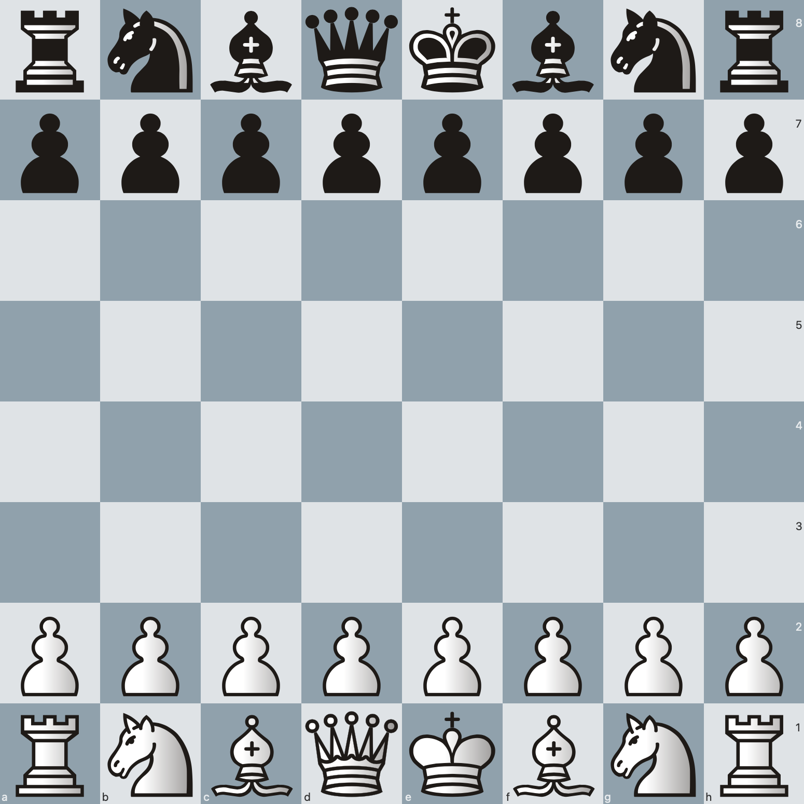
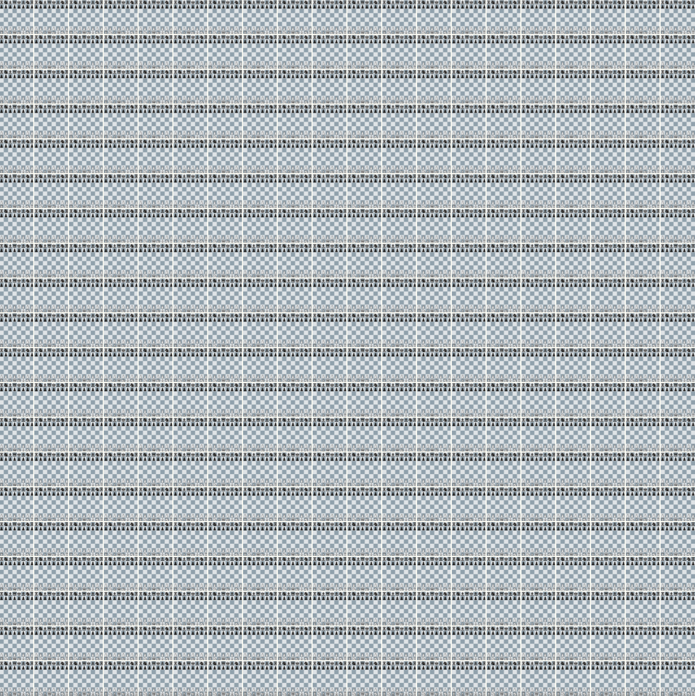
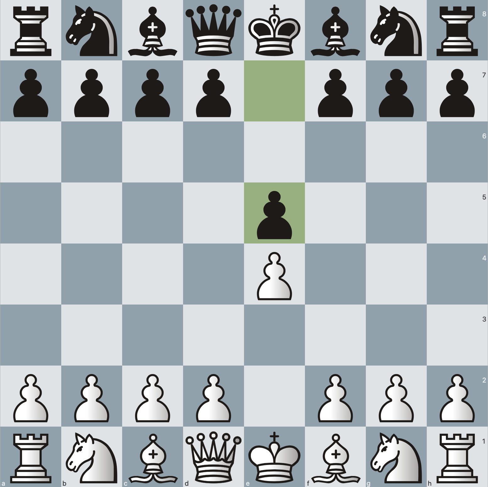

Billions of games have been played throughout history. Most of them are completely unique.
On the opening turn, white has 20 legal moves to choose from. So does black.
A chess match can take a virtually infinite number of paths.

Billions of games have been played throughout history. Most of them are completely unique.
On the opening turn, white has 20 legal moves to choose from. So does black.

That amounts to 400 possible boards after only pushing around a couple of pieces.
But most of these moves are almost never played. Because they suck.

In an analysis of 30,000 matches on the Free Internet Chess Server since 2020, nearly a third of games began the exact same way. Both players push a pawn into the center.
Very creative.
A chess match can take a virtually infinite number of paths. But like a daily commute driven hundres of times, chess players find themselves wearing out the same paths time and time again. They like sticking to the openings they know.